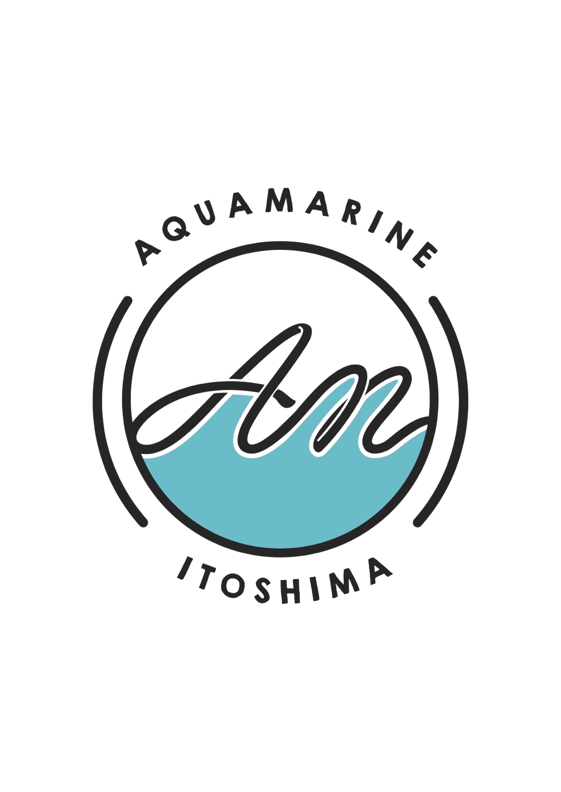

アクアマリン糸島
蛤の焼き方
アツアツの蛤を楽しむための手順をご案内します
焼き方の手順

1
蛤を網の上に置く
蛤はそのまま網の上に置いてください。

2
加熱する
加熱すると貝の中の汁が温まり、殻が少しずつ開いてきます。

3
殻が開くのを待つ
殻が開き始めたら食べ頃が近づいています。無理に殻を開けないでください。
殻は自然に開くまで待ってください。

4
醤油を入れる
殻が開いたら、お好みで醤油を少量入れてください。

5
さらに加熱する
醤油を入れた後、30秒〜1分ほど加熱してください。

6
完成
十分に加熱できたらお召し上がりください。
ご注意ください
殻が開く際に汁が飛ぶことがあります。
殻や汁は非常に熱くなります。
無理に殻を開けないでください。
十分に加熱してからお召し上がりください。
やけどにご注意ください。
ご不明な点がございましたら、
スタッフまでお気軽にお声かけください。